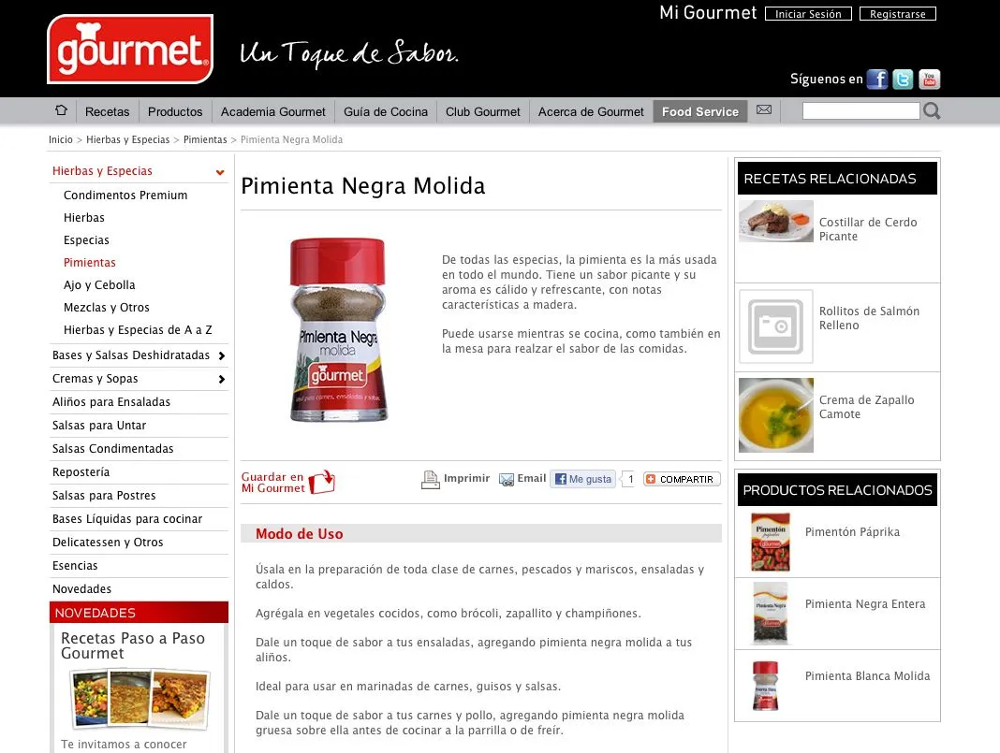
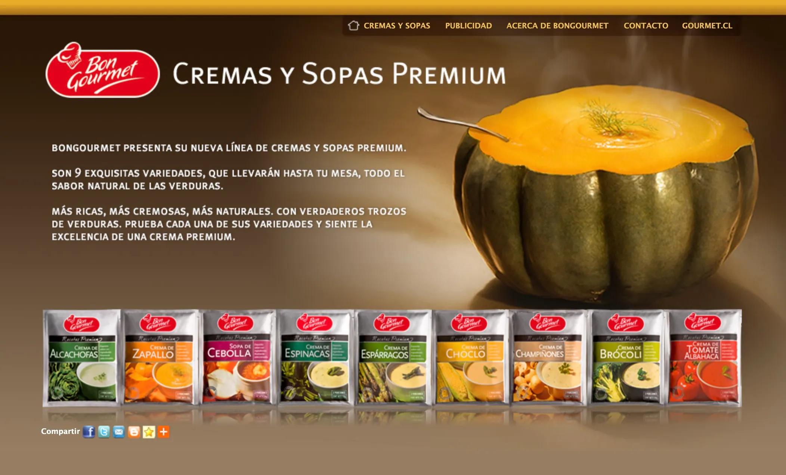
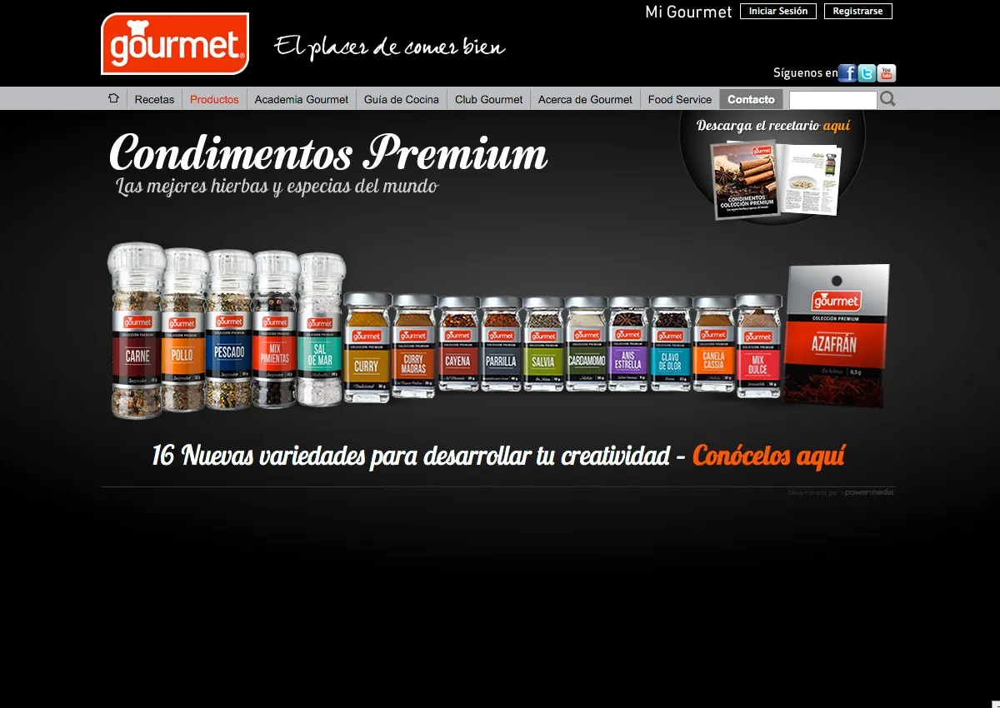
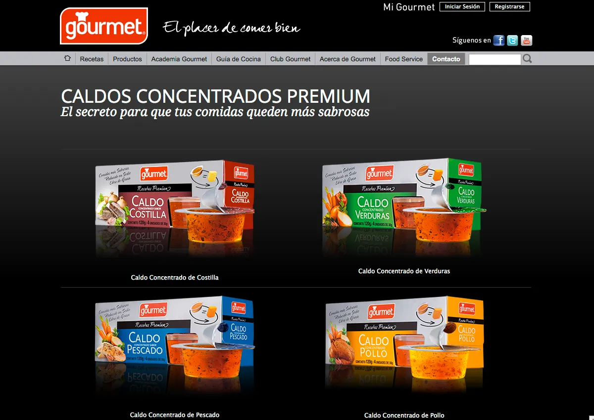
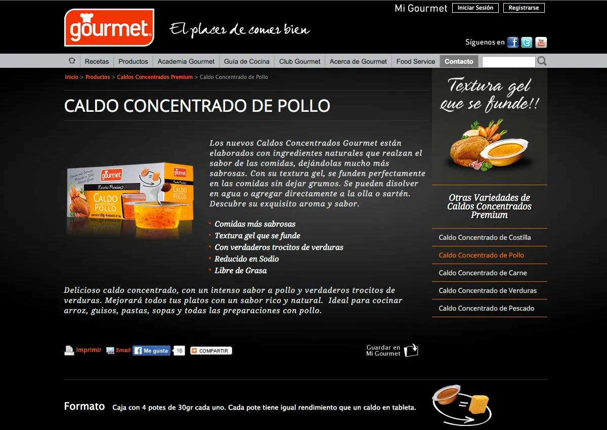

Contexto y Desafío
Good Food S.A. con su marca de alimentos Gourmet, inició
su presencia digital en 2000 con un sitio web básico. El
desafío fue acompañar su crecimiento y evolución
tecnológica durante 15 años, adaptándose a nuevas
tendencias y necesidades del negocio.
Rol y Responsabilidades
Como diseñadora UX/UI, fui responsable del diseño de alta
fidelidad, desarrollo en HTML/CSS, implementación de SEO,
diseño y envío de mailings, investigación de usuarios y
realización de tests de usabilidad tipo guerrilla para
validar y mejorar la experiencia. Iteración con el cliente
y asesoría permanente.
Proceso y Metodología
Introducción temprana de SEO y métricas de Google
Analytics para fidelización orgánica. Investigación de
usuarios para entender sus necesidades y comportamientos.
Tests de usabilidad tipo guerrilla para obtener feedback
rápido y mejorar iterativamente los diseños. Creación
progresiva de nuevas funciones: mailing mensual,
gamificación, tienda online, RRSS integradas
(Facebook, YouTube y Twitter) y campañas digitales de
lanzamiento de productos nuevos.
Migración del sitio a WordPress en las últimas versiones,
cuidando que el capital SEO adquirido no solo se
mantuviera, sino que mejorara. Desarrollo de un "tema
Gourmet" personalizado para facilitar la creación y
edición de páginas mediante templates. Capacitación al
cliente para que pudiera gestionar autónomamente la
adición de contenido, como recetas, tips de cocina y
otros.
Resultados e Impacto
Arquitectura de la información centrada en el usuario y
flujos eficientes. 40,000 suscriptores al mailing mensual,
con suscripciones orgánicas de usuarios activos, con una
alta tasa de lectura y bajísima tasa de rebote. Excelente
posicionamiento SEO orgánico y crecimiento sostenido de la
marca en el ecosistema digital. Cliente empoderado para
gestionar contenido digital sin depender del equipo
técnico.
Lecciones Aprendidas y Reflexión
Esta experiencia me enseñó la importancia de la
adaptabilidad tecnológica, la colaboración continua con el
cliente, y el diseño centrado en el usuario para construir
productos digitales escalables, sostenibles y exitosos a
largo plazo.
- Heurística
- Wireframes
- Prototipo Hi-Fi